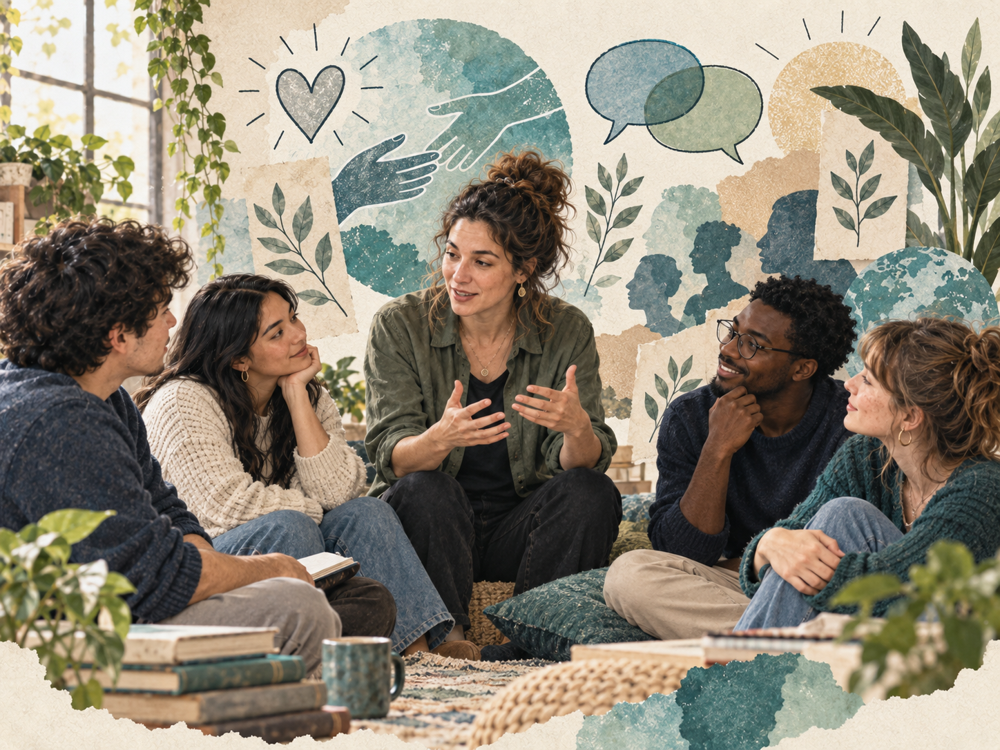

Cuerpo, emoción, lenguaje y experiencia de ser instructor(a)
Enseñar y aprender también ocurren en el cuerpo y en la relación.
El eje Humanidad desplazó la conversación desde los contenidos y las herramientas hacia la experiencia concreta de ser instructor(a): cómo se habita la formación, cómo se sienten sus exigencias, qué hace el lenguaje y qué lugar ocupan el vínculo, el cuidado y el territorio.

Taller · Sandra Ramón Velásquez
Cuerpo, emoción y lenguaje
Tres dimensiones que participan activamente de la formación
Postura, movimiento, expresión, descanso y hábitos corporales se relacionan con la disposición para aprender.
Las emociones se manifiestan corporalmente y estados como el estrés pueden afectar la experiencia formativa.
Autocontrol, automotivación, empatía y manejo de relaciones forman parte de la formación humana.
La pregunta vuelve sobre quien enseña: cómo está su cuerpo, qué emociones gestiona y qué comunican sus gestos.
Pedir, prometer, ofrecer, afirmar o declarar no solo describe: actúa sobre las relaciones y puede abrir o cerrar posibilidades.
Ejercicio teatral
Instructor SENA: crónicas de una misión posible
La experiencia cotidiana del oficio puesta en escena
Implica una misión formativa con sentido humano y social.
Cambios, exigencias institucionales, diversidad de aprendices e imprevistos forman parte del oficio.
Acompañar, escuchar, orientar y reconocer al otro hacen parte de la formación.
Enseñar compromete emociones, cuerpo, experiencia y trayectoria personal.
Voces del conversatorio
Humanizar también es leer el contexto y cuidar a quien enseña.
La formación responde a condiciones sociales, tecnológicas y territoriales diversas.
Entre la planeación y lo que sucede siempre aparecen imprevistos que demandan adaptación.
La tecnología no reemplaza acompañar, orientar y comprender al aprendiz y su contexto.
Condiciones de trabajo, bienestar, desplazamiento y reconocimiento también importan.
La experiencia de formar también transforma a quien orienta el proceso.
El reconocimiento entre pares y el trabajo colectivo sostienen el oficio.
La gran inquietud del eje